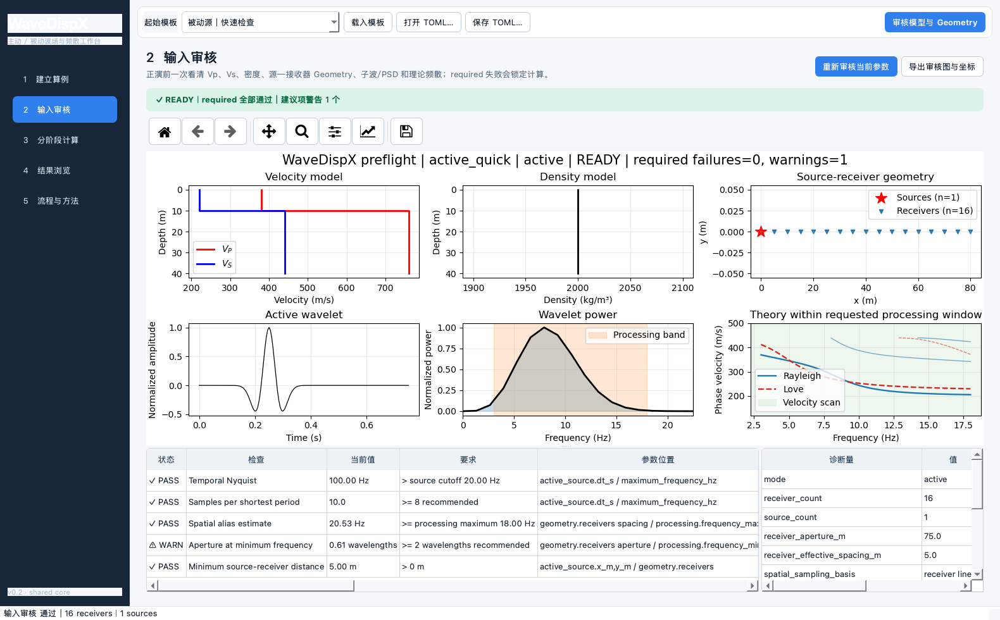
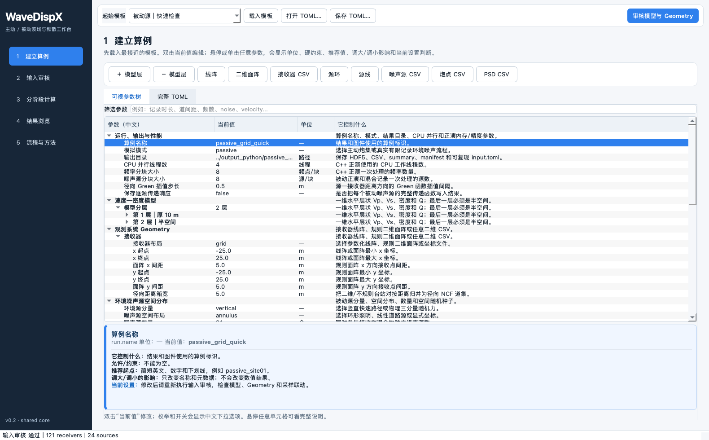
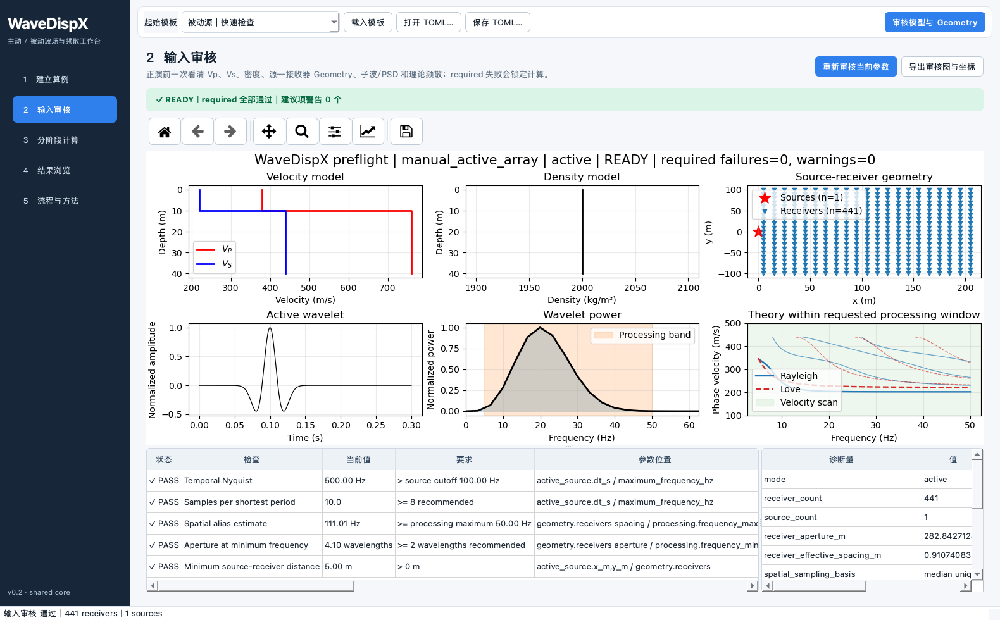
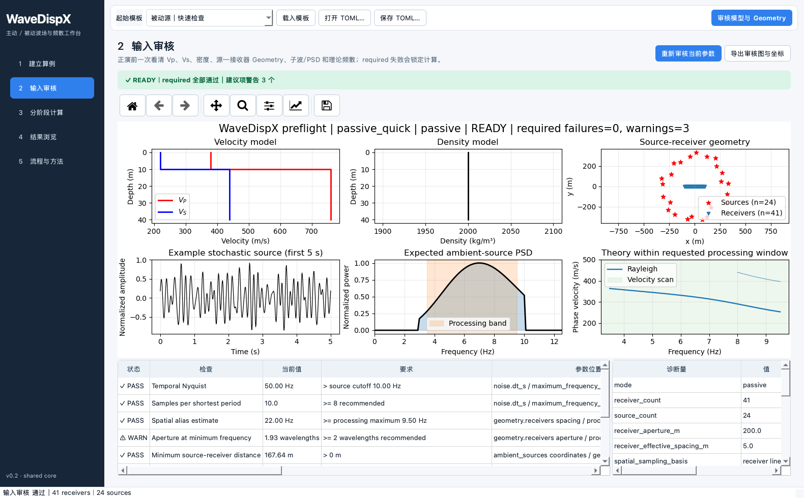
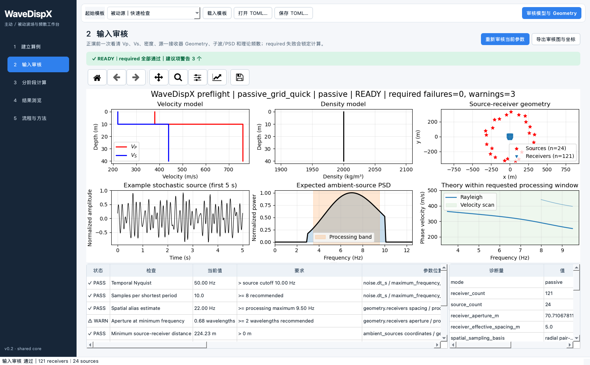
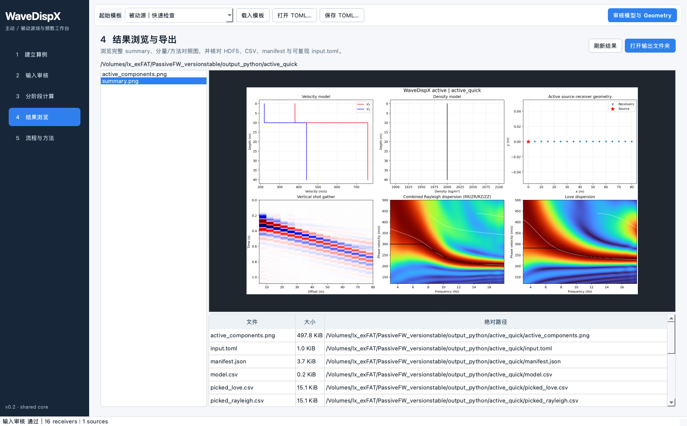
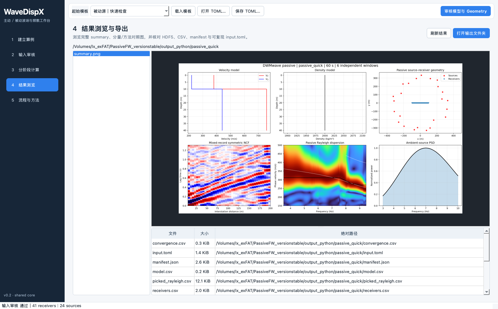
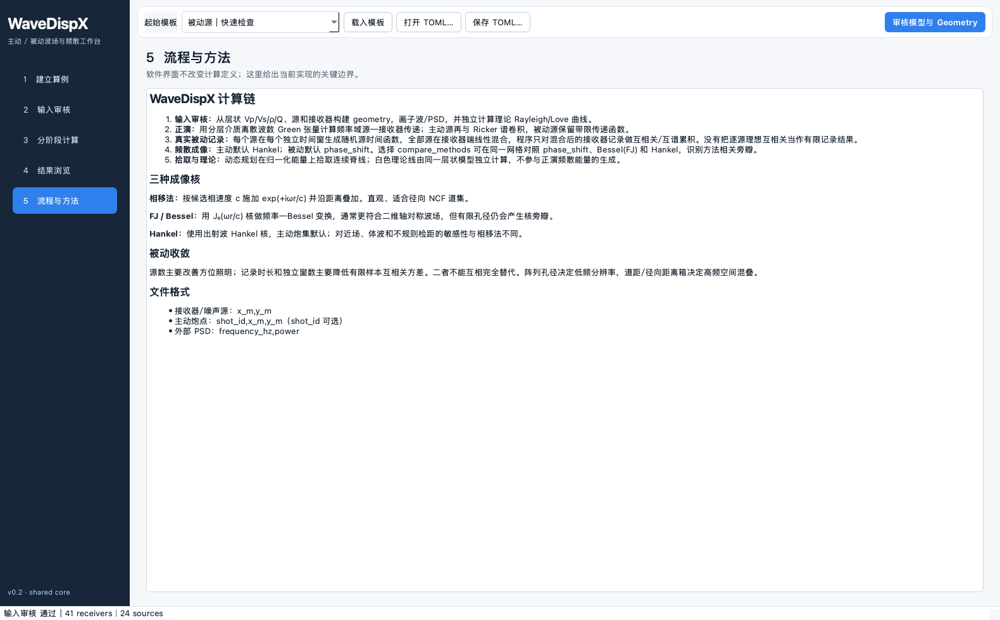

主动线阵
active_quick.toml16 receivers5–80 m、5 m 道距；炮点 (0,0)；Ricker 8 Hz；vertical+horizontal；Hankel。

主动 / 被动波场正演、真实有限记录互相关与频散分析 · PySide6 原生工作台
请使用 2026-09-17 新版完整操作手册，包含自动填参、重置、可编辑网格和记录窗、最新完整窗口截图。本页保留旧版界面参考。
无需浏览器，无需打包成 .app；直接在 seisloc 环境运行。
cd /Volumes/lx_exFAT/PassiveFW_versionstable conda run -n seisloc python -m pip install -e . --no-build-isolation conda run -n seisloc wavedispx-desktop
源码入口：conda run -n seisloc python -m wavedispx.desktop
CaseSession → WaveDispXWorkflow。
双击当前值列编辑。每个参数使用中文名称与独立单位列；悬停或单击后，下方蓝色帮助卡持续显示“控制什么、允许/约束、推荐起点、调大/调小影响和当前设置判断”。模式、布局、分量、方法及开关使用带中文解释的下拉选项；写入 TOML 的仍是标准英文值。“参数树 ↔ 完整 TOML”双向同步。修改后审核状态自动过期，重新通过 required 后才解锁计算。
| 按钮 | 配置 | 用途 |
|---|---|---|
| ＋/－ 模型层 | model.layers[] | 在半空间前增删有限层；末层保持 inf |
| 线阵 / 二维面阵 | geometry.receivers | 参数化 line 或 grid |
| 接收器 CSV | x_m,y_m | 任意二维台阵 |
| 源环 / 源线 / 噪声源 CSV | ambient_sources | 被动源空间照明 |
| 炮点 CSV | shot_id,x_m,y_m | 从多炮表明确选择一炮 |
| PSD CSV | frequency_hz,power | 外部非负、频率递增功率谱 |
完整例子位于 examples/observation_system/：receivers.csv、shots.csv、noise_sources.csv、noise_psd.csv。
5–80 m、5 m 道距；炮点 (0,0)；Ricker 8 Hz；vertical+horizontal；Hankel。

21×21 面阵；按实际二维炮检距正演，审核有效径向采样和空间混叠。

200 m 孔径；24 源环；60 s / 6 独立窗；phase shift。quick 参数会显示收敛建议。

11×11 面阵；台站对按 5 m 径向距离箱转成 NCF 道集。

compare_methods=true 同网格输出 phase shift / FJ(Bessel) / Hankel。


phase shift：按候选相速度施加 exp(+iωr/c) 并沿距离叠加。FJ/Bessel：使用 J0(ωr/c) 核。Hankel：使用出射波 Hankel 核。有限孔径、近场、体波、稀疏检距和成像核都会产生不同旁瓣，因此应使用同网格方法对照。
报错框固定显示参数位置、问题、怎么改和原始技术信息；输入审核表中的红色 FAIL 阻塞计算，黄色 WARN 是建议项。
QT_QPA_PLATFORM=offscreen conda run -n seisloc python -m wavedispx.desktop \ --template examples/passive_grid_quick.toml \ --page review --screenshot /tmp/wavedispx_review.png
本手册界面图全部由上述真实窗口截图功能生成，并非设计稿或拼图。更详细的逐项说明见 Markdown 手册。